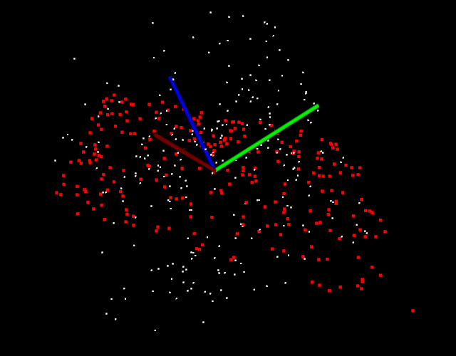

04-随机采样一致性算法RANSAC *¶
RANSAC概念及作用¶
RANSAC是“RANdom SAmple Consensus”（随机抽样共识或采样一致性）的缩写，它是一种迭代方法，用于从包含异常值的一组数据中估计数学模型的参数。该算法由Fischler和Bolles于1981年发布。
RANSAC算法假定我们要查看的所有数据均由内部值和异常值组成。可以用带有一组特定参数值的模型来解释离群值，而离群值在任何情况下都不适合该模型。其过程可以从数据中估计所选模型的最佳参数。
左图和右图（来自[Wikipedia]）显示了RANSAC算法在二维数据集上的简单应用。我们左边的图像是包含内部值和异常值的数据集的可视表示。右边的图像以红色显示所有异常值，以蓝色显示内部值。蓝线是RANSAC完成的工作的结果。在这种情况下，我们尝试拟合数据的模型是一条直线，看起来很适合我们的数据。


PCL 中以随机采样一致性算法( RANSAC) 为核心，实现了五种类似于RANSAC的随机参数估计算法，例如随机采样一致性估计（RANSAC ) 、最大似然一致性估计 （MLESAC ) 、最小中值方差一致性估计 ( LMEDS )等，所有的估计参数算法都符合一致性准则。利用RANSAC可以实现点云分割，目前 PCL 中支持的几何模型分割有 空间平面、直线、二维或三维圆、圆球、锥体等 。 RANSAC的另一应用就是点云的配准对的剔除。
RANSAC算法简介¶
RANSAC从样本中随机抽选出一个样本子集，使用最小方差估计算法对这个子集计算模型参数，然后计算所有样本与该模型的偏差，再使用一个预先设定好的阈值与偏差比较，当偏差小于阈值时，该样本点属于模型内样本点 ( inliers），或称内部点、局内点或内点，否则为模型外样本点（outliers），或称外部点、局外点或外点，记录下当前的 inliers 的个数，然后重复这一过程。每一次重复都记录当前最佳的模型参数，所谓最佳即是inliers的个数最多 ，此时对应的inliers个数为 best_ninliers 。 每次迭代的末尾都会根据期望的误差率、 best_ninliers、总样本个数、当前迭代次数，计算一 个迭代结束评判因子，据此决定是否迭代结束。迭代结束后，最佳模型参数就是最终的模型参数估计值 。
RANSAC理论上可以剔除outliers的影响，并得到全局最优的参数估计。但是RANSAC 有两个问题，首先在每次迭代中都要区分 inliers 和 outlieres，因此需要事先设定阈值，当模型具有明显的物理意义时，这个阈值还比较容易设定，但是若模型比较抽象时，阈值就不那么容易设定了。而且固定阈值不适用于样本动态变化的应用；第二个问题是，RANSAC的迭代次数是运行期决定的，不能预知迭代的确切次数（当然迭代次数的范围是可以预测的）。除此之外， RANSAC 只能从一个特定数据集中估计一个模型，当两个（或者更多个）模型存在时，RANSAC 同时找到多个模型。
代码实现¶
平面模型经常被应用到常见的室内平面分割提取中，比如墙、地板、桌面，其他模型常应用到根据几何结构检测识别和分割物体（比如用一个圆柱体模型分割出一个杯子）。
random_sample_consensus.cpp
#include <iostream>
#include <thread>
#include <pcl/console/parse.h>
#include <pcl/filters/extract_indices.h>
#include <pcl/io/pcd_io.h>
#include <pcl/point_types.h>
#include <pcl/sample_consensus/ransac.h>
#include <pcl/sample_consensus/sac_model_plane.h>
#include <pcl/sample_consensus/sac_model_sphere.h>
#include <pcl/visualization/pcl_visualizer.h>
using namespace std::chrono_literals;
pcl::visualization::PCLVisualizer::Ptr
simpleVis(pcl::PointCloud<pcl::PointXYZ>::ConstPtr cloud, pcl::PointCloud<pcl::PointXYZ>::ConstPtr final = nullptr) {
// --------------------------------------------
// -----Open 3D viewer and add point cloud-----
// --------------------------------------------
pcl::visualization::PCLVisualizer::Ptr viewer(new pcl::visualization::PCLVisualizer("3D Viewer"));
viewer->setBackgroundColor(0, 0, 0);
viewer->addPointCloud<pcl::PointXYZ>(cloud, "sample cloud");
viewer->setPointCloudRenderingProperties(pcl::visualization::PCL_VISUALIZER_POINT_SIZE, 2, "sample cloud");
if (final != nullptr) {
pcl::visualization::PointCloudColorHandlerCustom<pcl::PointXYZ> color_handler(final, 255, 0, 0);
viewer->addPointCloud<pcl::PointXYZ>(final, color_handler, "final cloud");
viewer->setPointCloudRenderingProperties(pcl::visualization::PCL_VISUALIZER_POINT_SIZE, 4, "final cloud");
}
viewer->addCoordinateSystem (1.0, "global");
viewer->initCameraParameters();
return (viewer);
}
/**
* 使用方法：
*
* random_sample_consensus 创建包含外部点的平面
* random_sample_consensus -f 创建包含外部点的平面，并计算平面内部点
*
* random_sample_consensus -s 创建包含外部点的球体
* random_sample_consensus -sf 创建包含外部点的球体，并计算球体内部点
*/
int
main(int argc, char **argv) {
// initialize PointClouds
pcl::PointCloud<pcl::PointXYZ>::Ptr cloud(new pcl::PointCloud<pcl::PointXYZ>);
pcl::PointCloud<pcl::PointXYZ>::Ptr final(new pcl::PointCloud<pcl::PointXYZ>);
// populate our PointCloud with points
cloud->width = 500;
cloud->height = 1;
cloud->is_dense = false;
cloud->points.resize(cloud->width * cloud->height);
for (std::size_t i = 0; i < cloud->points.size(); ++i) {
if (pcl::console::find_argument(argc, argv, "-s") >= 0 || pcl::console::find_argument(argc, argv, "-sf") >= 0) {
cloud->points[i].x = 1024 * rand() / (RAND_MAX + 1.0);
cloud->points[i].y = 1024 * rand() / (RAND_MAX + 1.0);
if (i % 5 == 0) // 可能会散落在球体外
cloud->points[i].z = 1024 * rand() / (RAND_MAX + 1.0);
else if (i % 2 == 0)// 在球体正方向内
cloud->points[i].z = sqrt(1 - (cloud->points[i].x * cloud->points[i].x)
- (cloud->points[i].y * cloud->points[i].y));
else // 在球体负方向内
cloud->points[i].z = -sqrt(1 - (cloud->points[i].x * cloud->points[i].x)
- (cloud->points[i].y * cloud->points[i].y));
} else {
cloud->points[i].x = 1024 * rand() / (RAND_MAX + 1.0);
cloud->points[i].y = 1024 * rand() / (RAND_MAX + 1.0);
if (i % 2 == 0)
cloud->points[i].z = 1024 * rand() / (RAND_MAX + 1.0);
else
cloud->points[i].z = -1 * (cloud->points[i].x + cloud->points[i].y);
}
}
std::vector<int> inliers;
// created RandomSampleConsensus object and compute the appropriated model
// 圆形
pcl::SampleConsensusModelSphere<pcl::PointXYZ>::Ptr
model_s(new pcl::SampleConsensusModelSphere<pcl::PointXYZ>(cloud));
// 平面
pcl::SampleConsensusModelPlane<pcl::PointXYZ>::Ptr
model_p(new pcl::SampleConsensusModelPlane<pcl::PointXYZ>(cloud));
if (pcl::console::find_argument(argc, argv, "-f") >= 0) {
pcl::RandomSampleConsensus<pcl::PointXYZ> ransac(model_p);
ransac.setDistanceThreshold(.01);
ransac.computeModel();
ransac.getInliers(inliers);
} else if (pcl::console::find_argument(argc, argv, "-sf") >= 0) {
pcl::RandomSampleConsensus<pcl::PointXYZ> ransac(model_s);
ransac.setDistanceThreshold(.01);
ransac.computeModel();
ransac.getInliers(inliers);
}
// copies all inliers of the model computed to another PointCloudqq
// 讲cloud中指定索引的点拷贝到final点云中
pcl::copyPointCloud(*cloud, inliers, *final);
// creates the visualization object and adds either our original cloud or all of the inliers
// depending on the command line arguments specified.
pcl::visualization::PCLVisualizer::Ptr viewer;
if (pcl::console::find_argument(argc, argv, "-f") >= 0 || pcl::console::find_argument(argc, argv, "-sf") >= 0)
viewer = simpleVis(cloud, final);
else
viewer = simpleVis(cloud);
while (!viewer->wasStopped()) {
viewer->spinOnce(100);
std::this_thread::sleep_for(100ms);
}
return 0;
}
实现效果¶
-
执行
random_sample_consensus -f创建包含外部点的平面，并计算平面内部点
-
执行
random_sample_consensus -sf创建包含外部点的球体，并计算球体内部点
扩展¶
目前pcl::SampleConsensusModel<PointT>的实现类如下：官方链接